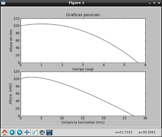

Generando una gráfica en python con matplotlib. Parte 10
Posted on dom 05 junio 2011 in Tutorial Python • 3 min read
Revisando algunos scripts que tengo en mi equipo me encontre con uno que hace el cálculo de la física de un lanzamiento vertical.
La precisión del cálculo se logra con un arreglo donde se define los datos de la variable tiempo.
Esto se logra gracias al modulo numpy que permite crear un arreglo de valores decimales con valores específicos entre cada elemento del arreglo.
Si se necesita un arreglo con valores desde 0 a 5,6 con elementos entre 0,1 se ejecuta la siguiente instrucción:
#!/usr/bin/env python2.6
# -*- coding: utf-8 -*-
import numpy as np
arreglo = np.arange(0, 5.60,0.1)
print arreglo
[ 0. 0.1 0.2 0.3 0.4 0.5 0.6 0.7 0.8 0.9 1. 1.1 1.2 1.3 1.4
1.5 1.6 1.7 1.8 1.9 2. 2.1 2.2 2.3 2.4 2.5 2.6 2.7 2.8 2.9
3. 3.1 3.2 3.3 3.4 3.5 3.6 3.7 3.8 3.9 4. 4.1 4.2 4.3 4.4
4.5 4.6 4.7 4.8 4.9 5. 5.1 5.2 5.3 5.4 5.5]
Se tiene 2 funciones una fx(t) y otra fy(t) ambas realizan los cálculos de la posición de un cuerpo para lanzamiento vertical, se calcula se tiene el tiempo que se tarda en caer el cuerpo hasta el piso desde una altura de 100 mts con una velocidad inicial en X y Y y la aceleración en el eje X y la gravedad.
Simplemente se usa matplotlib para generar el gráfico, en un próximo artículo se mostrará como usar glade+python+gtk con matplotlib para tener las dos gráficas que se muestran en la siguiente figura:

La primera gráfica muestra la trayectoria del cuerpo con respecto a su altura versus el tiempo que tarda en caer. La segunda gráfica muestra la trayectoria con respecto a la altura y la distancia horizontal, sería una descripción de la trayectoria del lanzamiento del cuerpo.
El código donde se realiza el cálculo y las gráficas se muestra a continuación:
#!/usr/bin/env python
# -*- coding: utf-8 -*-
#Se importa el modulo numpy para generar un arreglo con los datos de la variable tiempo
import numpy as np
#Se importa matplotlib para generar la grafica.
import matplotlib.pyplot as plt
#Se define la funcion x(t) de la ecuacion de posicion (movimiento horizontal)
def fx (t):
#Se define la posicion inicial en 0
x0 = 0
#Se define la velocidad inicial en 2 mts/seg
v0x = 2
#Se define la aceleracion en 1 mts/seg^2
ax = 1
#Se hace el calculo de la posicion con respecto al tiempo
x = x0 + v0x*t + 0.5*ax*t**2
return x
#Se define la funcion y(t) de la ecuacion de posicion altura
def fy(t):
#Se define la altura inicial en 100 mts
y0 = 100
#Se define la velocidad inicial en 10 mts/seg
v0y = 10
#Se define la gravedad en 9.81 mts/seg^2
g = 9.81
#Se realiza el calculo de l posicion en funcion del tiempo
y = y0 + v0y*t - 0.5*g*t**2
return y
#Programa principal
def main():
#Se define un range desde 0 a 5.65 con intervalos de 0.01.
tiempo = np.arange(0, 5.65,0.01)
#Se define la figura
plt.figure(1)
#Se define la grafica.
plt.subplot(211)
#Se despligega la grafica de la distancia en X en funcion del tiempo
plt.plot(tiempo, fy(tiempo),"k")
#Se Coloca un titulo a la grafica y la informacion del eje y (tiempo)
plt.title("Graficas posicion")
plt.xlabel("tiempo (seg)")
plt.ylabel("Altura en mts")
#Se muestra la grafica de posicion en X respecto a la altura.
plt.subplot(212)
#Se grafica la funcion fx vs fy
plt.plot(fx(tiempo),fy(tiempo),'k')
#Se muestra la info del eje X y Y
plt.xlabel("Distancia horizontal (mts)")
plt.ylabel("Altura (mts)")
#Se muestra las graficas.
plt.show()
if __name__ == "__main__":
main()
Como mencione antes, en un siguiente artículo se mostrará este mismo ejemplo pero usando glade.
===
¡Haz tu donativo! Si te gustó el artículo puedes realizar un donativo con Bitcoin (BTC) usando la billetera digital de tu preferencia a la siguiente dirección: 17MtNybhdkA9GV3UNS6BTwPcuhjXoPrSzV
O Escaneando el código QR desde billetera: